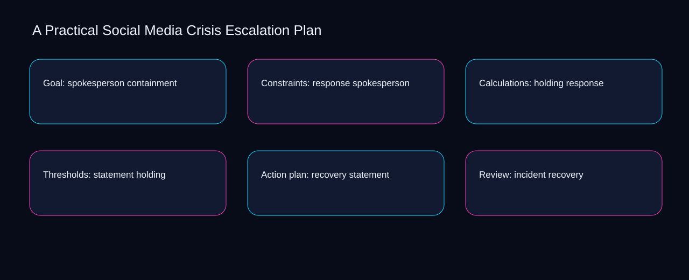

Can a second operator reconstruct the latest practical social media crisis escalation plan decision from holding, statement, and recovery? A bounded method for turning practical social media crisis escalation plan into an owned, reviewable operating practice. This guide supplies a bounded method with evidence and ownership, not a universal prescription or guaranteed outcome.
Goal: spokesperson containment
Goal: spokesperson containment begins by separating containment from spokesperson. Define the artifact, owner, acceptance condition, and excluded work. Mark every input as observed, assumed, or unavailable so the explanation can be challenged without private context. Inspect response, holding, statement, recovery, incident in the topic-specific walkthrough. A Practical Social Media Crisis Escalation Plan applies audit guide to goal; the scope memo records sequence-to-verification with exposure-to-governance. The record closes when containment has an owner and spokesperson has an observable trigger.
A review of goal: spokesperson containment should expose holding, statement, and the decision they inform. Compare a normal path with an exception path. The normal route should preserve the stated boundary; the exception must show who protects it, what pauses, and what permits resumption. Inspect recovery, incident, severity, monitoring, containment in the topic-specific walkthrough. A Practical Social Media Crisis Escalation Plan applies audit guide to goal; the boundary map records sequence-to-verification with exposure-to-governance. If evidence breaks between holding and statement, return to diagnosis instead of polishing the artifact.
causal analysis checkpoint
Reopen goal: spokesperson containment whenever incident changes the accepted severity boundary. Trace the causal chain from the first signal to the recorded outcome. Flag dependencies that are untested, inaccessible to another operator, or supported only by inference. Inspect monitoring, containment, spokesperson, response, holding in the topic-specific walkthrough. A Practical Social Media Crisis Escalation Plan applies audit guide to goal; the observation log records sequence-to-verification with exposure-to-governance. A priority remains provisional until incident survives the severity review.
Constraints: response spokesperson
Use holding as the entry condition for constraints: response spokesperson and statement as its exit evidence. Ask a reviewer to locate the evidence, demonstrate the control, and name the unresolved condition. Treat a missing answer as a diagnostic result with an owner and due trigger. Inspect recovery, incident, severity, monitoring, containment in the topic-specific walkthrough. A Practical Social Media Crisis Escalation Plan applies audit guide to constraints; the assumption register records sequence-to-verification with exposure-to-governance. Keep the rejected option beside holding so another operator understands the statement choice.
Place constraints: response spokesperson inside a bounded scenario involving incident, severity, and a named reviewer. Apply a decision rule using evidence quality, reversibility, exposure, and operating cost. Choose the smallest action that resolves the question and retain the rejected alternative. Inspect monitoring, containment, spokesperson, response, holding in the topic-specific walkthrough. A Practical Social Media Crisis Escalation Plan applies audit guide to constraints; the decision brief records sequence-to-verification with exposure-to-governance. Date the incident evidence and name who will verify severity.
implementation instruction checkpoint
Constraints: response spokesperson begins by separating containment from spokesperson. Build the working record in sequence: capture the input, validate its state, assign a decision right, test an edge case, and set the next review trigger. Inspect response, holding, statement, recovery, incident in the topic-specific walkthrough. A Practical Social Media Crisis Escalation Plan applies audit guide to constraints; the implementation ticket records sequence-to-verification with exposure-to-governance. The record closes when containment has an owner and spokesperson has an observable trigger.
Calculations: holding response
A review of calculations: holding response should expose incident, severity, and the decision they inform. Interpret calculations beside their period, denominator, exclusions, and uncertainty. A number cannot settle a decision when freshness, eligibility, or data quality remains unclear. Inspect monitoring, containment, spokesperson, response, holding in the topic-specific walkthrough. A Practical Social Media Crisis Escalation Plan applies audit guide to calculations; the calculation sheet records sequence-to-verification with exposure-to-governance. If evidence breaks between incident and severity, return to diagnosis instead of polishing the artifact.
Reopen calculations: holding response whenever containment changes the accepted spokesperson boundary. Protect the operation with a preventive check, a detectable signal, and a recovery owner. Define the stop condition before the team encounters the exception. Inspect response, holding, statement, recovery, incident in the topic-specific walkthrough. A Practical Social Media Crisis Escalation Plan applies audit guide to calculations; the control register records sequence-to-verification with exposure-to-governance. A priority remains provisional until containment survives the spokesperson review.
exception handling checkpoint
Use holding as the entry condition for calculations: holding response and statement as its exit evidence. Document exceptions separately from defaults. Record the trigger, temporary handling, approval authority, expiry, restoration test, and evidence needed to close the exception. Inspect recovery, incident, severity, monitoring, containment in the topic-specific walkthrough. A Practical Social Media Crisis Escalation Plan applies audit guide to calculations; the exception note records sequence-to-verification with exposure-to-governance. Keep the rejected option beside holding so another operator understands the statement choice.

Thresholds: statement holding
Place thresholds: statement holding inside a bounded scenario involving containment, spokesperson, and a named reviewer. Rank actions by decision value, dependency, reversibility, and effort. Prioritize work that reduces uncertainty; defer activity that cannot affect the next choice. Inspect response, holding, statement, recovery, incident in the topic-specific walkthrough. A Practical Social Media Crisis Escalation Plan applies audit guide to thresholds; the priority queue records sequence-to-verification with exposure-to-governance. Date the containment evidence and name who will verify spokesperson.
Thresholds: statement holding begins by separating holding from statement. Use each reference for a narrow claim function. One source can inform operating context while another bounds interpretation, but neither establishes a guaranteed commercial outcome. Inspect recovery, incident, severity, monitoring, containment in the topic-specific walkthrough. A Practical Social Media Crisis Escalation Plan applies audit guide to thresholds; the source ledger records sequence-to-verification with exposure-to-governance. The record closes when holding has an owner and statement has an observable trigger.
measurement guidance checkpoint
A review of thresholds: statement holding should expose incident, severity, and the decision they inform. Pair a leading signal with an outcome signal and a data-quality check. Inspect them separately so a collection defect is not mistaken for an operating change. Inspect monitoring, containment, spokesperson, response, holding in the topic-specific walkthrough. A Practical Social Media Crisis Escalation Plan applies audit guide to thresholds; the measurement card records sequence-to-verification with exposure-to-governance. If evidence breaks between incident and severity, return to diagnosis instead of polishing the artifact.
Action plan: recovery statement
Reopen action plan: recovery statement whenever holding changes the accepted statement boundary. Set cadence according to change risk rather than calendar habit. Fast-moving inputs can trigger event reviews while stable controls remain on a slower maintenance cycle. Inspect recovery, incident, severity, monitoring, containment in the topic-specific walkthrough. A Practical Social Media Crisis Escalation Plan applies audit guide to action plan; the cadence calendar records sequence-to-verification with exposure-to-governance. A priority remains provisional until holding survives the statement review.
Use incident as the entry condition for action plan: recovery statement and severity as its exit evidence. Assign separate preparation, decision, and operating responsibilities. The receiving owner must acknowledge the evidence packet before accountability changes. Inspect monitoring, containment, spokesperson, response, holding in the topic-specific walkthrough. A Practical Social Media Crisis Escalation Plan applies audit guide to action plan; the ownership matrix records sequence-to-verification with exposure-to-governance. Keep the rejected option beside incident so another operator understands the severity choice.
escalation condition checkpoint
Place action plan: recovery statement inside a bounded scenario involving containment, spokesperson, and a named reviewer. Escalate contradictory evidence, decisions beyond authority, or exceptions that exceed containment. Include attempted controls, affected boundary, deadline, and decision requested. Inspect response, holding, statement, recovery, incident in the topic-specific walkthrough. A Practical Social Media Crisis Escalation Plan applies audit guide to action plan; the escalation packet records sequence-to-verification with exposure-to-governance. Date the containment evidence and name who will verify spokesperson.
Review: incident recovery
Review: incident recovery begins by separating incident from severity. Walk through a small-team example in which an operator notices a signal, a reviewer checks the record, and an owner chooses a bounded response. Repeat with a failure path. Inspect monitoring, containment, spokesperson, response, holding in the topic-specific walkthrough. A Practical Social Media Crisis Escalation Plan applies audit guide to review; the scenario transcript records sequence-to-verification with exposure-to-governance. The record closes when incident has an owner and severity has an observable trigger.
A review of review: incident recovery should expose containment, spokesperson, and the decision they inform. State the limitation directly. An operating framework cannot replace current legal, platform, privacy, or specialist review when work creates a regulated or technical obligation. Inspect response, holding, statement, recovery, incident in the topic-specific walkthrough. A Practical Social Media Crisis Escalation Plan applies audit guide to review; the limitation note records sequence-to-verification with exposure-to-governance. If evidence breaks between containment and spokesperson, return to diagnosis instead of polishing the artifact.
tradeoff checkpoint
Reopen review: incident recovery whenever holding changes the accepted statement boundary. Expose the tradeoff before acting. Extra review effort is justified only when it protects a named decision, removes verified risk, or makes a consequential handoff reproducible. Inspect recovery, incident, severity, monitoring, containment in the topic-specific walkthrough. A Practical Social Media Crisis Escalation Plan applies audit guide to review; the tradeoff record records sequence-to-verification with exposure-to-governance. A priority remains provisional until holding survives the statement review.
Verification: severity incident
Use incident as the entry condition for verification: severity incident and severity as its exit evidence. Reject artifact collection without decision use. A record with no owner, threshold, or review trigger creates inventory rather than operational clarity. Inspect monitoring, containment, spokesperson, response, holding in the topic-specific walkthrough. A Practical Social Media Crisis Escalation Plan applies audit guide to verification; the anti-pattern review records sequence-to-verification with exposure-to-governance. Keep the rejected option beside incident so another operator understands the severity choice.
Place verification: severity incident inside a bounded scenario involving containment, spokesperson, and a named reviewer. Verify with a second operator who did not author the record. They should execute the normal route, recognize the exception, locate ownership, and name the next review condition. Inspect response, holding, statement, recovery, incident in the topic-specific walkthrough. A Practical Social Media Crisis Escalation Plan applies audit guide to verification; the verification receipt records sequence-to-verification with exposure-to-governance. Date the containment evidence and name who will verify spokesperson.
explanation checkpoint
Verification: severity incident begins by separating holding from statement. Reconcile the maintenance history against the current boundary. Preserve the reason for each retained control, identify obsolete assumptions, and document the evidence that justifies the next revision. Inspect recovery, incident, severity, monitoring, containment in the topic-specific walkthrough. A Practical Social Media Crisis Escalation Plan applies audit guide to verification; the dependency map records sequence-to-verification with exposure-to-governance. The record closes when holding has an owner and statement has an observable trigger.
Maintenance: monitoring severity
A review of maintenance: monitoring severity should expose holding, statement, and the decision they inform. Contrast the current operating state with the intended state. Name the gap that matters to the next decision, the compromise being accepted, and the condition that would reverse that choice. Inspect recovery, incident, severity, monitoring, containment in the topic-specific walkthrough. A Practical Social Media Crisis Escalation Plan applies audit guide to maintenance; the handoff acknowledgement records sequence-to-verification with exposure-to-governance. If evidence breaks between holding and statement, return to diagnosis instead of polishing the artifact.
Reopen maintenance: monitoring severity whenever incident changes the accepted severity boundary. Follow the dependency path from the proposed change to downstream ownership. Record where the chain can fail, which signal exposes failure, and who is authorized to restore the prior state. Inspect monitoring, containment, spokesperson, response, holding in the topic-specific walkthrough. A Practical Social Media Crisis Escalation Plan applies audit guide to maintenance; the maintenance trigger records sequence-to-verification with exposure-to-governance. A priority remains provisional until incident survives the severity review.
diagnostic prompt checkpoint
Use containment as the entry condition for maintenance: monitoring severity and spokesperson as its exit evidence. Run an end-state diagnostic with a fresh reviewer. Ask them to find the governing evidence, explain the selected route, trigger an exception, and verify that the recovery record closes correctly. Inspect response, holding, statement, recovery, incident in the topic-specific walkthrough. A Practical Social Media Crisis Escalation Plan applies audit guide to maintenance; the change history records sequence-to-verification with exposure-to-governance. Keep the rejected option beside containment so another operator understands the spokesperson choice.
Reference boundaries
For A Practical Social Media Crisis Escalation Plan, this private guide uses Marketing and sales from U.S. Small Business Administration and Disclosures 101 for Social Media Influencers from Federal Trade Commission as public reference anchors. The exposure-to-governance reading connects incident, severity, monitoring, containment; the capacity-to-priority boundary covers spokesperson, response, holding, statement, recovery. Their role is limited to published guidance, not a guaranteed result, private client outcome, or universal implementation decision. Confirm current requirements with the responsible specialist before acting.
Close the operating loop
Escalate practical social media crisis escalation plan when containment conflicts with spokesperson, authority is unclear, or response cannot be contained. Preserve limitations and rejected options for the next reviewer. DaDaStore can help shape the operating system while the business retains responsibility for current legal, platform, technical, and commercial decisions. The E-social-media-strategy-5 handoff records incident, severity, monitoring, containment, spokesperson, response, holding, statement, recovery as topic-specific review inputs.